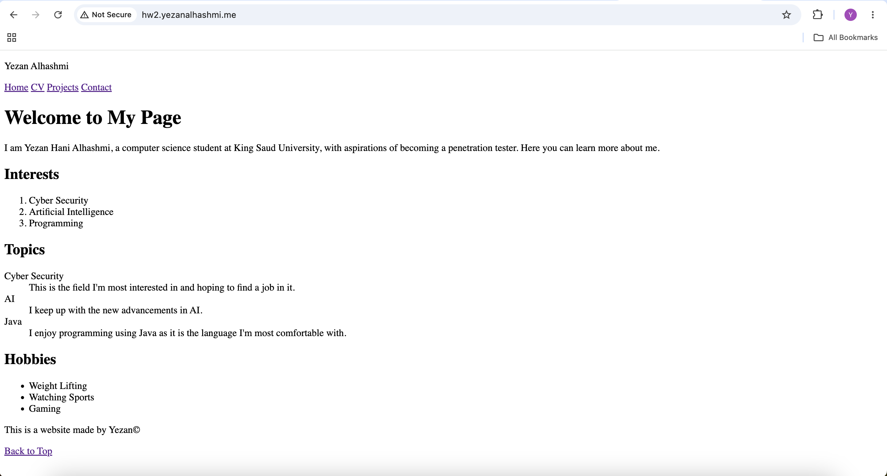
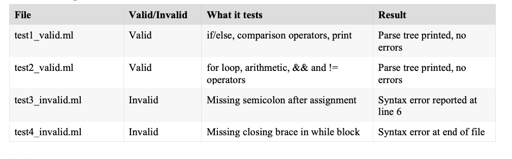

Personal website
Making a professional website using html that includes a homepage, cv page, projects page, and contact page.

Yezan Alhashmi
Making a professional website using html that includes a homepage, cv page, projects page, and contact page.

A compiler front-end for a custom toy language (MiniLang+), built using ANTLR. Covers grammar definition, parsing, and semantic analysis — including symbol tables, scope resolution, and type-checking.
